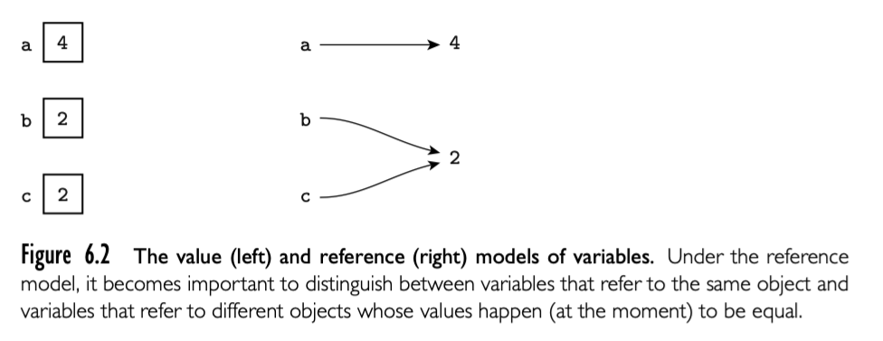
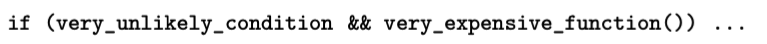

6.1.1 Precedence and Associativity
- expression
- statement (side effect)
6.1.2 Assignments
-
reference or value 
b := 2 c := b a := b + creference model immutable is important. Reference model every variable is an l-value.
-
Boxing
-
Orthogonality 正交 Algol 68 都是 expression C 同时使用 expression statement， C 提供了特殊的 expression forms for selection and sequencing.
-
combination assignment operators += ++ -- .eg.
-
multiway assignment
6.1.3 Initialization
initialization assignment in c++ is different, assigenment should decollate first.
Java and C# 不区分
6.1.4 Ordering within Expressions
顺序很重要：
- side effects:
a-f(b)-c*d如果f(b)影响 d，这个表达式结果就取决于 f(b) 和 c*d 哪个先执行 - code improvement: the order of evaluation of subexpressions has an impact on both register allocation and instruction scheduling. 先后顺序影响代码优化，代码优化不会提供哪个先执行的保证，只保证正确性同时尽可能提升运行速度。
所以，大多数编程语言的 order of evaluation of operands and arguments is undefined.
applying mathematical identities
数学交换律，分配律，相关率。但是在计算机中随便重排操作可能会出现 overflow。或者浮点数在计算机中的表示是近似数，同一个表达式，不同顺序的运算可能会导致不同的结果。
6.1.5 Short-Circuit Evaluation
boolean expression 提供了特殊而且重要的代码优化方法 -- 短路。

这种形式的计算，可能会节省运行时间。
但是也有不提供短路能力的语言，比如 Pascal
p := my_list
while (p <> nil) and (p^.key <> val) do
p := p^.next
这种写法就不对，因为两个条件都会执行，就会执行 p = nil 的情况。
但是短路也不总是正面的。比如两个条件 E1 和 E2 都有 side effect， 所以希望同时计算，再判断。有些语言提供了短路和非短路两种选择，比如 Ada 中使用 and / or 表示常规，and then / or else 表示短路。在 C 中，可以使用 & | 可以作为 && || 的非短路选择。